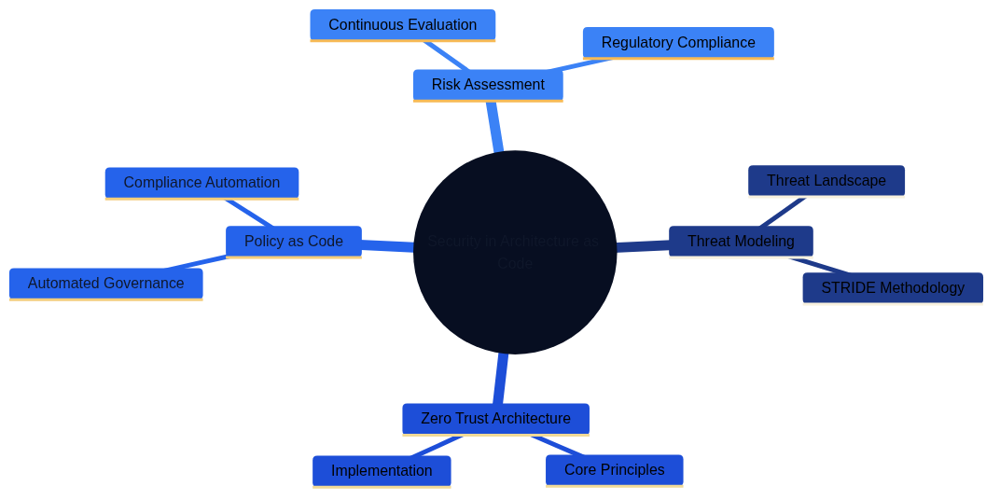
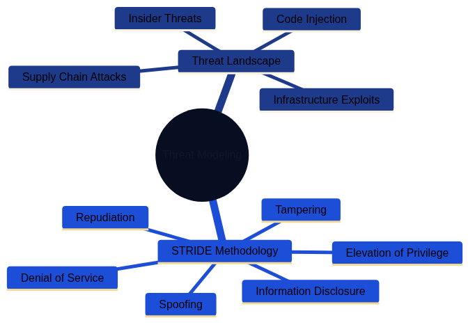
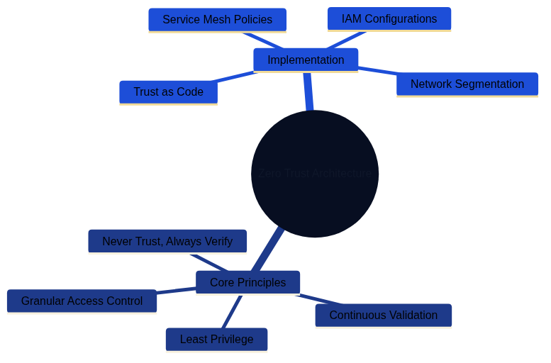
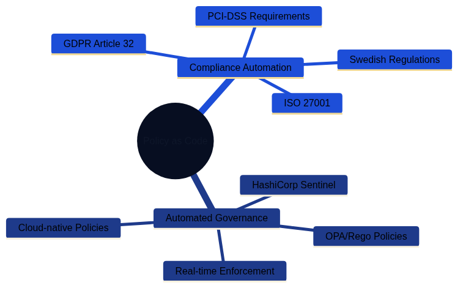
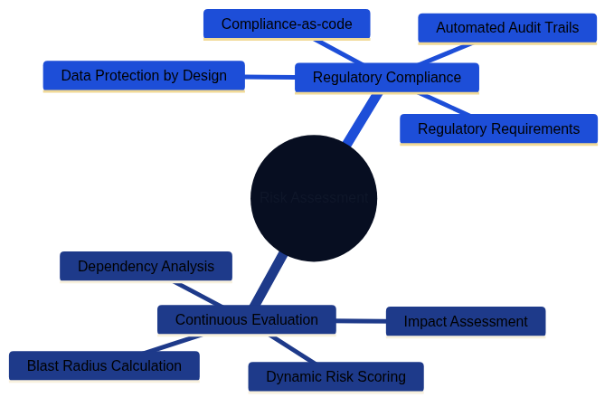

Security Fundamentals for Architecture as Code
Security is the backbone of a successful Architecture as Code implementation. This chapter explains how security principles are embedded from the first design sprint through automated policy enforcement, proactive threat management, and continuous complian ce monitoring. Treating security as code enables organisations to deliver robust, scalable, and auditable protections without sl owing delivery teams.
Dimensions of security architecture

The overview mind map illustrates the four main dimensions of security in Architecture as Code: Threat Modeling, Zero Trust Architecture, Policy as Code, and Risk Assessment. Each dimension is explored in detail through dedicated mind maps.
Detailed security dimensions
Threat Modeling

Threat Modeling encompasses understanding the threat landscape and applying methodologies like STRIDE to identify and mitigate security risks systematically.
Zero Trust Architecture

Zero Trust Architecture is built on core principles of continuous verification and implemented through network segmentation, service mesh policies, and granular access controls.
Policy as Code

Policy as Code enables automated governance and compliance automation through tools like OPA/Rego and HashiCorp Sentinel, ensuring regulatory requirements are met programmatically.
Risk Assessment

Risk Assessment involves continuous evaluation of blast radius and impact, combined with regulatory compliance measures to maintain data protection and audit trails.
Scope and goals of the chapter
The security challenges facing contemporary digital enterprises demand a fundamental reassessment of traditional defensive pract ices. As organisations adopt Architecture as Code to manage rapidly expanding and highly distributed environments, security stra tegies must evolve in parallel. This chapter offers a comprehensive guide to integrating security seamlessly into code-based arc hitectures.
Perimeter-based defences designed for static environments become ineffective in cloud-native and microservice-oriented platforms . Security can no longer be treated as a separate afterthought. Modern organisations must embrace security-as-code principles wh ere critical decisions are codified, version-controlled, and automated alongside the rest of the architecture estate.
European organisations operate within a dense mesh of regulatory obligations. GDPR enforced by the European Data Protection Board (EDPB), NIS2 Directive requirements for critical infrastructure, sectoral regulations, and financial supervision requirements create a multidimensional compliance landscape. At the same time, ongoing digital transformation programmes demand faster innovation and shorter time-to-market. Architecture as Code addresses both pressures by automating compliance controls and embedding "secure by default" patterns into every delivery pipeline.
This chapter explores security from an integrated perspective that joins technical implementation, organisational processes, and regulatory requirements. Readers gain a deep understanding of threat modelling, risk assessment, policy automation, and inciden t response across code-driven environments. Particular attention is given to Section 10.6, which introduces advanced security arc hitecture patterns for large-scale enterprises.
Theoretical foundation: security architecture in the digital era
The paradigm shift from perimeter protection to Zero Trust
Traditional security philosophies relied on a clear boundary between the "inside" and "outside" of the enterprise. Network perime ters, firewalls, and VPN solutions created a "hard shell, soft centre" model where anything within the perimeter was implicitly tr usted. That paradigm was viable when most resources were physically located in tightly controlled data centres and employees work ed from fixed offices.
Modern operations dismantle those assumptions. Cloud services distribute workloads across multiple providers and regions. Remote working extends the security perimeter to every home network. API-driven architectures introduce enormous volumes of service-to- service communication that traditional controls struggle to monitor.
Zero Trust Architecture (ZTA) provides the necessary evolution in security thinking. The guiding principle of "never trust, alway s verify" requires explicit validation of every user, device, and network transaction regardless of location or prior authentica tion. Implementing ZTA demands granular identity management, continuous posture assessment, and policy-driven access controls.
In an Architecture as Code context, ZTA enables systematic implementation of trust policies. Network segmentation, service mesh r ules, and identity and access management (IAM) configurations are defined declaratively and enforced consistently across all env ironments. The result is "trust as code", where security decisions become reproducible, testable, and auditable.
Threat modelling for code-based architectures
Effective security architecture begins with a deep understanding of the threat landscape and relevant attack vectors. Threat mode lling for Architecture as Code environments differs from traditional application modelling by including the infrastructure layer , CI/CD pipelines, and automation tooling as potential attack surfaces.
The STRIDE methodology provides a structured framework for identifying threats across architectural layers. In Architecture as Code ecosystems, STRIDE must be applied to infrastructure definitions, deployment pipelines, secrets management systems, and runtime environments alike.
| Threat Category | Description | Architecture as Code Concerns |
|---|---|---|
| Spoofing | Impersonating a user, system, or component | Compromised service accounts, stolen IAM credentials, forged infrastructure definitions |
| Tampering | Unauthorized modification of data or code | Malicious commits to infrastructure code, altered pipeline configurations, modified secrets |
| Repudiation | Denying actions without proper audit trail | Missing version control history, inadequate logging of infrastructure changes, untracked deployments |
| Information Disclosure | Exposing sensitive information | Secrets in code repositories, unencrypted data stores, overly permissive access policies |
| Denial of Service | Making systems unavailable | Resource exhaustion through misconfiguration, deletion of critical infrastructure, deployment failures |
| Elevation of Privilege | Gaining unauthorized access levels | Exploiting IAM misconfigurations, compromised deployment pipelines, privilege escalation in modules |
Supply chain attacks represent a particularly acute concern for code-based architectures. When infrastructure is defined through third-party modules, container images, and external APIs, dependency chains can be compromised. Incidents such as the 2020 Solar Winds breach demonstrate how adversaries can infiltrate development tooling to reach downstream targets.
Code injection attacks also take on new dimensions when infrastructure code is executed automatically. Malicious Terraform modul es, corrupted Kubernetes manifests, or compromised Ansible playbooks can lead to privilege escalation, data exfiltration, or serv ice outages at the architectural level. Insider threats must also be considered: developers with access to infrastructure code c an alter security configurations, plant backdoors, or exfiltrate data through seemingly legitimate commits.
Risk assessment and continuous compliance
Traditional risk assessments are performed periodically, often annually or following major releases. That approach is incompatib le with continuous deployment and rapid infrastructure evolution. Continuous risk assessment embeds risk evaluation within the de velopment life cycle through automated tooling and policy engines. Every infrastructure change is assessed for security impacts b efore deployment, with dynamic risk scores calculated from changes to the attack surface, data exposure, and compliance posture.
Quantitative risk analysis becomes more practical when infrastructure is defined as code. Blast radius calculations can be autom ated through dependency mapping. Potential impact assessments draw on data classification and service criticality encoded in infr astructure tags and metadata.
Compliance-as-code transforms audits from reactive exercises into proactive safeguards. Instead of verifying compliance after de ployment, regulatory requirements are evaluated continuously within the delivery process. GDPR Article 25 ("Data protection by de sign and by default") can be implemented through automated policy checks that validate privacy controls from the first line of co de.
Policy as Code: automated security governance
The evolution from manual to automated policy enforcement
Traditional governance relies on manual processes, document-heavy policies, and human-controlled safeguards. Security teams write policies in natural language, which are then interpreted and implemented by multiple delivery teams. This creates interpretatio n gaps, inconsistent implementations, and long delays between policy updates and technical enforcement.
Policy as Code replaces manual translations with machine-readable definitions that can be evaluated automatically against infras tructure configurations. This eliminates the implementation gap between policy intent and technical reality while enabling real-t ime enforcement.
Open Policy Agent (OPA) has emerged as a de facto standard for policy-as-code implementations. OPA's Rego language provides expre ssive syntax for complex policies that can be evaluated across diverse technology stacks. Rego policies integrate with CI/CD pip elines, admission controllers, API gateways, and runtime environments to ensure comprehensive coverage.
HashiCorp Sentinel offers an alternative focused on Infrastructure as Code workflows. Sentinel policies can be enforced at Terra form plan time to prevent non-compliant deployments. AWS Config Rules and Azure Policy deliver cloud-native policy engines with t tight integration into their respective platforms.
Integration with CI/CD for continuous policy enforcement
Successful policy-as-code programmes require deep integration with software delivery life cycles. Manual security reviews as gat eways create bottlenecks that frustrate teams and delay releases. Automated policy evaluation enables a "security as an enabler" approach.
"Shift-left" security principles are particularly effective for policy enforcement. Validating policies during commit stages pro vides rapid feedback, enabling developers to address issues while context is fresh. Git hooks, pre-commit checks, and IDE extens ions can deliver real-time feedback during development.
CI/CD integration extends policy checks across multiple stages. Static analysis of infrastructure code during build stages can d detect obvious violations. Dynamic evaluations in staging environments catch configuration problems before production release. P roduction monitoring ensures policies remain effective throughout the operational life cycle.
Policy testing becomes a core element of the development process once policies are treated as code. Logic must be tested for posi tive and negative scenarios to validate correct behaviour under different conditions. Test-driven policy development yields robus t implementations that behave predictably in edge cases. Gradual rollout strategies—including blue/green policy deployments, pol icy versioning, and structured rollback procedures—reduce disruption from policy changes.
Control objectives that prove compliance repeatedly
Security teams often begin with high-level objectives—"enforce multi-factor authentication for privileged users" or "encrypt customer data at rest"—without a clear route to automated evidence. Architecture as Code breaks each objective into declarative assertions that can be executed inside pipelines and runtime monitors. Tests are written once, then reused wherever the same control objective appears, whether that is ISO 27001 Annex A, SOC 2 CC6, NIST 800-53 IA-2, or an internal policy. The policy design example shows how a single Rego module evaluates MFA consistently. Its outputs flow into Evidence as Code to create machine-readable artefacts that auditors can consume without rebuilding bespoke test suites for every framework.
Secrets management and data protection
Comprehensive secrets lifecycle management
Modern distributed architectures multiply the number of secrets compared with monolithic systems. API keys, database credential s, encryption keys, certificates, and service tokens proliferate across microservices, containers, and cloud services. Embeddi ng secrets in configuration files or environment variables creates significant vulnerabilities and operational complexity.
Comprehensive secrets management covers the entire lifecycle—from generation through distribution, rotation, and retirement. Auto mated key generation services such as HashiCorp Vault or cloud-native offerings like AWS Secrets Manager provide cryptographic s tandards with strong entropy. Manual secret creation should be the exception.
Distribution mechanisms must balance security with operational efficiency. Secrets should be delivered through secure channels s uch as encrypted configuration management systems, secrets management APIs, or runtime injection. Centralised secret storage sho uld enforce encryption in transit and at rest. Hardware Security Modules (HSMs) or HSM-backed cloud services provide the highest level of protection for critical keys.
Advanced encryption strategies for data protection
Protecting data requires addressing multiple states and access patterns: at rest, in transit, and in use. Key management is ofte n the weakest link. Rotation policies must balance the benefits of frequent rotation with the operational effort of coordinating updates across distributed estates.
Application-level encryption provides granular safeguards that persist even if infrastructure is compromised. Field-level encrypt ion for sensitive database columns, client-side encryption for sensitive inputs, and end-to-end encryption for service-to-servic e communication create layered defences.
Emerging techniques such as homomorphic encryption and secure multi-party computation enable computation on encrypted data. Whil e adoption is still limited, Architecture as Code practices can prepare organisations for future integration through abstracted interfaces.
Data classification and handling procedures
Effective protection begins with clear data classification. Automated discovery tools can assist through content analysis and pa ttern recognition, but human judgement remains essential for contextual accuracy. Hybrid approaches combining automation with h uman validation deliver the best results.
Handling procedures should be codified for each classification level, covering storage, transmission, processing, and disposal. P olicy-as-code frameworks can enforce handling rules automatically, including retention policies and secure destruction processe s. Privacy by design requirements from GDPR Article 25 demand data minimisation, purpose limitation, and automated deletion when retention periods expire.
Protecting Infrastructure as Code state
Infrastructure state files capture live inventories, secrets, and the policy decisions enforced across environments. They must therefore be treated as sensitive artefacts rather than operational by-products. Authoritative vendor guidance spells out the baseline controls, anchored by HashiCorp's definitive recommendations for safeguarding Terraform state (Source [16]):
- HashiCorp – “Securing Terraform State” (2024): instructs teams to store state in remote backends, enable state locking, and avoid local copies to eliminate workstation exposure and race conditions during deployment (Source [16]).
- HashiCorp – “Backend Type: s3” (2024): documents the
dynamodb_table,encrypt, andkms_key_idsettings that enforce DynamoDB-backed locking, server-side encryption, and versioning for Amazon S3 state backends (Source [17]). - HashiCorp – “Terraform Security Best Practices” (2023): details the policy guardrails, key management requirements, and secret-handling approaches HashiCorp recommends for enterprise Terraform programmes (Source [20]).
- Microsoft Learn – “Store Terraform state in Azure Storage” (2024): requires Azure Storage accounts with encryption at rest, Azure AD or SAS-based access control, and blob leases so Terraform operations are serialised and auditable (Source [18]).
- Google Cloud – “Store Terraform state in Cloud Storage” (2024): recommends uniform bucket-level access, object versioning, and customer-managed encryption keys to govern Terraform state across Google Cloud estates (Source [19]).
Centrally managed storage such as AWS S3 with DynamoDB locking, Azure Storage with container leases, or Google Cloud Storage with object versioning should therefore be configured with customer-managed encryption keys and monitored for drift (Sources 16, 17, 18, and 19). Applying the verified practices above keeps Terraform state aligned with enterprise key management policies, with key rotation schedules, hardware-backed storage, and explicit break-glass procedures captured alongside the associated documentation. Integrating state access with secrets-management tooling ensures cryptographic material is recorded, rotated, and revoked under the same governance as application secrets.
Architecture as Code governance pipelines must verify that every workspace declares an approved remote backend and that encryption, locking, and access policy parameters match organisational standards. Automated checks should enforce the controls codified in the authoritative guidance (Sources 16, 17, 18, 19, and 20), while audit trails from Terraform Cloud, S3 access logs, or Azure Monitor are harvested into governance dashboards so compliance teams can demonstrate adherence to supervisory requirements and monitor for drift in state management controls.
Operational monitoring must extend beyond static configuration analysis. Remote state stores should stream access logs into a central SIEM, with correlation rules that raise alerts for:
- Repeated state initialisation attempts without a corresponding change request, indicating potential credential abuse.
- Manual state downloads or unlock operations executed outside approved pipeline identities.
- Versioning churn or bucket/object deletions that occur outside scheduled maintenance windows.
Alert destinations should include on-call rotas and service management tooling so that incidents can be triaged rapidly. Pairing those alerts with automated remediation—such as temporary access revocation via Terraform Cloud run tasks or AWS IAM quarantine policies—ensures that anomalous state activity is contained before it cascades into deployment failures.
Network security and micro-segmentation
Modern network architecture for Zero Trust environments
Perimeter-led network security is unsuitable for cloud-native deployments where applications span multiple networks, data centre s, and jurisdictions. Software-defined networking (SDN) moves network security from hardware appliances to code-driven control p lanes. Policies can be defined centrally and pushed automatically across hybrid environments, ensuring consistent enforcement re gardless of underlying infrastructure.
Micro-segmentation provides granular, application-aware control compared with traditional VLANs or subnets. Traffic policies can be defined using application identity, user context, and data classification to reduce lateral movement opportunities.
Container networking introduces additional complexity. Containers share network namespaces and often communicate directly, bypas sing traditional controls. Container Network Interface (CNI) plug-ins provide a consistent mechanism for implementing network po licies for containerised workloads.
Service mesh security architectures
Service mesh platforms solve inter-service security challenges in distributed applications. Mutual TLS (mTLS) enforced by the me sh ensures every service-to-service call is encrypted and authenticated. Identity certificates are provisioned and rotated autom atically, eliminating manual management overhead.
Policy-driven traffic routing centralises advanced controls such as rate limiting, circuit breaking, and request filtering. Poli cies can be adjusted dynamically based on threat intelligence or service health. Service mesh observability—metrics, distributed tracing, and access logs—delivers deep visibility for rapid incident response and forensic investigations.
Security maturity models for continuous improvement
Security maturity assessments provide structured frameworks for measuring current posture and prioritising investment. The Capability Maturity Model Integration (CMMI) for security supplies a five-level ladder from initial reactive practices to optimised proactive operations. European organisations can benchmark against industry peers by conducting regular CMMI assessments aligned with ENISA guidelines.
The NIST Cybersecurity Framework offers a practical approach built around the functions Identify, Protect, Detect, Respond, and R ecover. Embedding the framework into Architecture as Code enables systematic improvements with traceable outcomes.
This chapter has established the fundamental security principles and practices for Architecture as Code. The following chapter explores advanced security patterns, practical implementations, and future trends that build upon these foundations.
Sources and references
Academic sources and standards
- NIST. Cybersecurity Framework Version 1.1. National Institute of Standards and Technology, 2018.
- NIST. Special Publication 800-207: Zero Trust Architecture. National Institute of Standards and Technology, 2020.
- NIST. Post-Quantum Cryptography Standardisation. National Institute of Standards and Technology, 2023.
- ENISA. Cloud Security Guidelines for EU Organisations. European Union Agency for Cybersecurity, 2023.
- ISO/IEC 27001:2022. Information Security Management Systems – Requirements. International Organisation for Standardisation.
European authorities and regulatory sources
- EDPB. Guidelines on Data Protection by Design and by Default. European Data Protection Board, 2023.
- ENISA. NIS2 Directive Implementation Guidance. European Union Agency for Cybersecurity, 2023.
- European Commission. Regulation (EU) 2022/2554 on Digital Operational Resilience (DORA). Official Journal of the European Union, 2022.
- EBA. Guidelines on ICT and Security Risk Management. European Banking Authority, 2023.
- Directive (EU) 2016/679. General Data Protection Regulation. Official Journal of the European Union.
Technical standards and frameworks
- OWASP. Application Security Architecture Guide. Open Web Application Security Project, 2023.
- Cloud Security Alliance. Security Guidance v4.0. Cloud Security Alliance, 2023.
- CIS Controls v8. Critical Security Controls for Effective Cyber Defence. Centre for Internet Security, 2023.
- MITRE ATT&CK Framework. Enterprise Matrix. MITRE Corporation, 2023.
Industry references
- Amazon Web Services. AWS Security Best Practices. AWS Security Documentation, 2023.
- Microsoft. Azure Security Benchmark v3.0. Microsoft Security Documentation, 2023.
- HashiCorp. Securing Terraform State. HashiCorp Developer Documentation, 2024. https://developer.hashicorp.com/terraform/cloud-docs/state/securing
- HashiCorp. Terraform Security Best Practices. HashiCorp Learning Resources, 2023. https://developer.hashicorp.com/terraform/cloud-docs/recommended-practices/security
- HashiCorp. Backend Type: s3. HashiCorp Developer Documentation, 2024. https://developer.hashicorp.com/terraform/language/settings/backends/s3
- Microsoft Learn. Store Terraform state in Azure Storage. Microsoft Learn Documentation, 2024. https://learn.microsoft.com/en-gb/azure/developer/terraform/store-state-in-azure-storage
- Google Cloud. Store Terraform state in Cloud Storage. Google Cloud Documentation, 2024. https://cloud.google.com/docs/terraform/resource-management/store-terraform-state
- Open Policy Agent. OPA Policy Authoring Guide. Cloud Native Computing Foundation, 2023.
- Kubernetes Project. Pod Security Standards. Kubernetes Documentation, 2023.
European organisations and expertise
- ENISA. Threat Landscape Report 2023. European Union Agency for Cybersecurity, 2023.
- CERT-EU. Cybersecurity Threat Landscape Report 2023. Computer Emergency Response Team for the EU Institutions.
- European Cyber Security Organisation. European Cybersecurity Survey 2023. ECSO.
- EU Agency for Cybersecurity. Cybersecurity Research Publications. ENISA Technical Reports.
International security organisations
- SANS Institute. Security Architecture Design Principles. SANS Institute, 2023.
- ISACA. COBIT 2019 Framework for Governance and Management of Enterprise IT. ISACA, 2019.
- (ISC)². Cybersecurity Workforce Study. International Information System Security Certification Consortium, 2023.
All sources verified December 2023. Regulatory frameworks and technical standards are updated regularly; always consult the lat est official publications for definitive requirements.